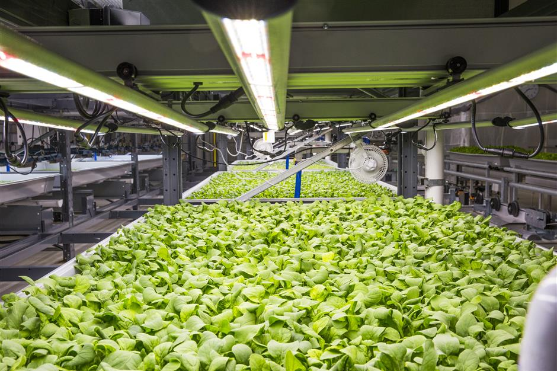

| WORLD ISSUES | |
| Future of Farming by Amelia Lee '23 | |
| |
|
|  | |
|
We envision farms to be large plots of flat land out in the countryside with crops growing from the soil and even a herd of cattle in the distance. What about in thirty years time?... When the population is projected to reach 9.9 billion, around 2.1 billion more than at present. Will there be enough space? Will there even be enough food to feed so many mouths? Disturbingly, with an increase in climate change, extreme weather conditions such as droughts and flooding are becoming more prevalent. They have had severe impacts on the food production systems worldwide. Currently, Jordan is facing one of the worst droughts in history. Farmers claim that the severe droughts have destroyed at least two thirds of their crops - many have lost revenues of up to $42,000. In Australia, severe droughts and floods hit regions of eastern Australia one after the other in March of 2021. However, trouble did not end there. It resulted in a devastating mouse plague that encroached on farms, chewing through crops; elsewhere, the floods sent spiders scrambling for dry land, creating massive cobwebs stretching across the region of Gippsland, southeastern Australia. These events have tested the resilience of traditional farming methods that may prove to be less effective and reliable. So are there ways to make farming more reliable and sustainable? What could the future look like for us? Is it viable? Over the years, researchers have been developing new indoor farming technologies such as vertical farming systems and modern greenhouses, allowing a more controlled environment that cannot be replicated in the natural world, meanwhile increasing effectiveness and efficiency. By using artificial intelligence, factors including light, temperature, carbon dioxide concentration and water pH can be controlled to ensure that crops are growing in optimal conditions. Not only could indoor farming help us adapt to the warming and unpredictable nature of our planet, it also has the potential to help slow down climate change by being more sustainable - using less water and producing fewer carbon emissions. Vertical farming systems require very little space due to their concept of growing upwards and thus can be implemented even in our own homes. The different types of vertical farming systems include hydroponics and aeroponics. Hydroponics, the more common method, grows plants in a nutrient rich water solution with the absence of soil. Aeroponics, on the other hand, nourishes plants with nothing more than mists filled with special nutrients. It does not need to be submerged, neither in soil, nor in water. Poverty affects children more than any other people. Children are more than twice as likely to live a poverty stricken life than adults and they die at twice the rate of their better-off peers. Worldwide more than 1 billion are multidimensionally poor; deprived of basic necessities including education, health, housing, nutrition, sanitation or water. Yields are typically much higher compared to traditional farming methods and crops can be grown all year round due to the controlled environment. Moreover, water consumption in a vertical farm’s highly regulated environment is significantly reduced and in some circumstances, they use 95% less water than traditional farming. Greenhouses are somewhat similar to traditional farming except that plants are grown in an enclosed space made of glass or plastic to allow natural light in. The environment which the plants are exposed to are semi-controlled. Greenhouses however are much cheaper than vertical farming systems and are regarded as more commercially viable. Some of these indoor farming methods have been trialled onboard the International Space Station in NASA’s mission to explore and experiment with growing plants in outer space. To get further insights into innovative farming in real life, let’s take a trip to the Netherlands!. Despite its small size, the Netherlands is the world’s second largest exporter of agricultural products in the world and is leading the way in agricultural innovation. How do they achieve it? The majority of Netherlands’ cultivation is in greenhouses combined with some technologies of vertical farming. Awarded the world’s best tomato grower in 2015, Duijvestijn Tomatoes in the Netherlands is an example of a sustainable and innovative farming organisation. The farm uses geothermal energy to heat its greenhouses and grows tomato plants in a hydroponic system to conserve water. The water used is captured from rainwater and is stored underground. No pesticides and chemicals are used on the farm, making products more organic and sustainable. Furthermore, the farm pipes in and uses waste carbon dioxide gas from local oil refineries for plants to use in photosynthesis, reducing carbon emissions. These allow the Duijvestijn farm to produce a higher yield of tomatoes, in less space, using fewer resources and in a sustainable manner. Other scientific techniques at a more precise level include CRISPR technology and GMOs, which involve the editing of genes to make crops more resistant to damage. However, there has been some controversy over such practices. Currently, nearly half of the world’s habitable land is currently being utilised by traditional forms of agriculture. Sustainable vertical agricultural methods will reduce this figure significantly, leaving more space for other means of development to sustain our growing population. The major problem is that innovative indoor agriculture requires a huge startup cost due to its enhanced technologies; however, an increasing number of countries are beginning to invest in them, including Singapore and China, hoping to combat global issues such as hunger and food insecurity, which is second on the list of seventeen sustainable development goals. REFERENCES
[1] Ahmad Daoud. Jordan facing 'one of the most severe' droughts in its history. 6 May 2021. https://www.aljazeera.com/gallery/2021/5/6/drought-hit-jordan-critical-as-water-sources-dry-up |
LIKE 👍 |